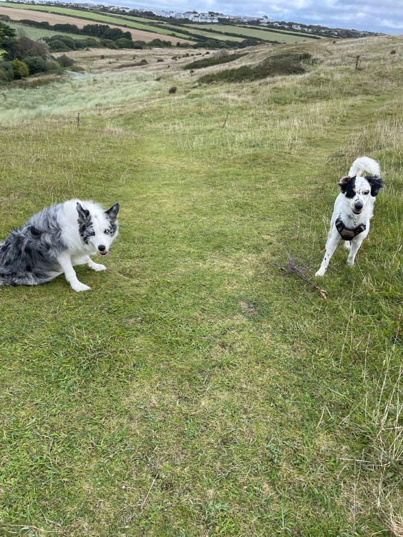
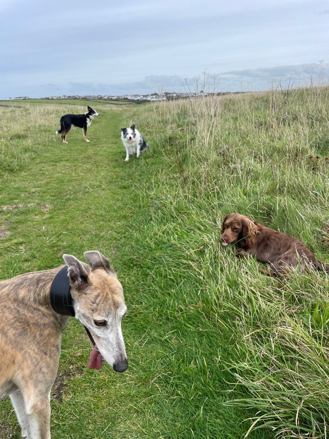
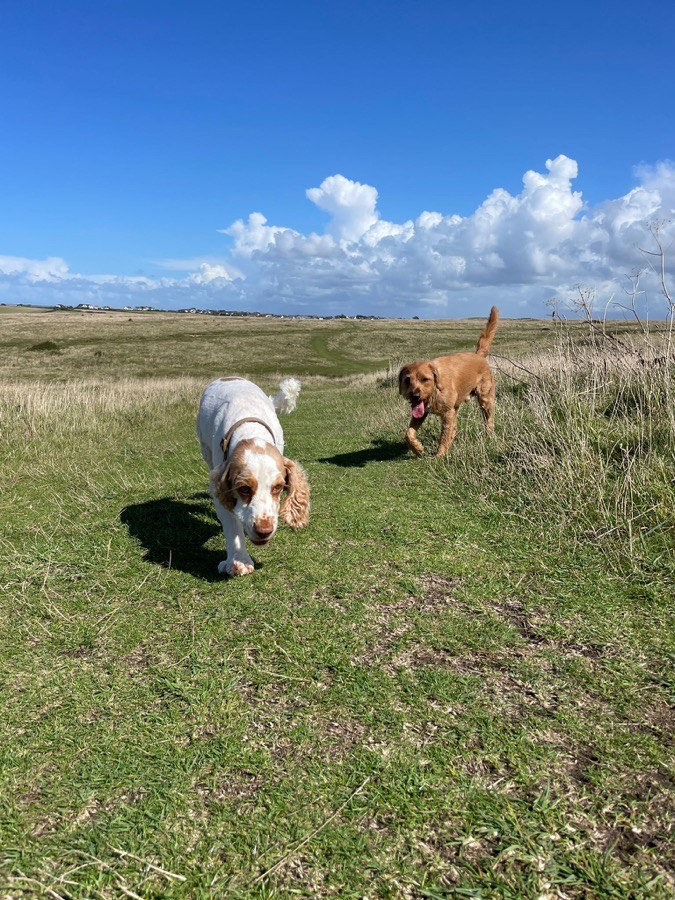
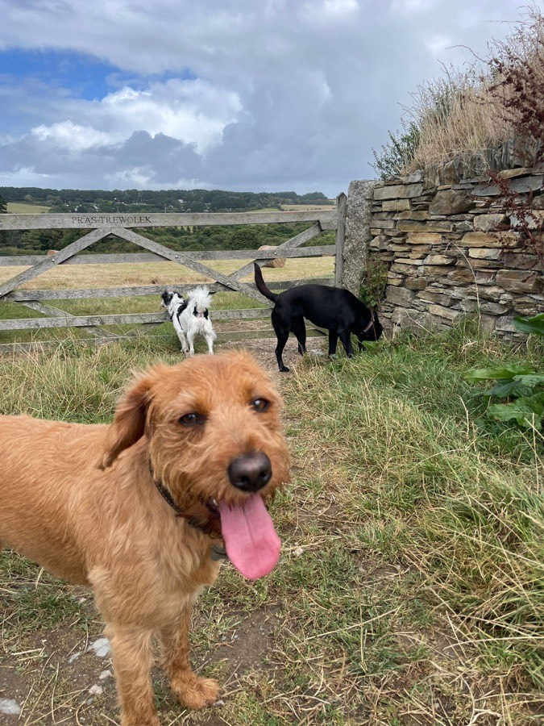

Dog Walking in Newquay, Cornwall
Happy Chaps is a friendly, fully insured dog walking and pet sitting service run by Tim, covering Newquay and the surrounding villages.
Book a free meet & greet
Hi, I'm Tim!
I'm your local, fully insured dog walker for Newquay. I provide professional, reliable and loving care for your dogs, whether that's a daily walk while you're at work or an evening sit while you're out.
From sandy zoomies on Fistral to scenic strolls along the Gannel and the coastal paths, I make sure your dog gets the right blend of exercise, social time and attention. Small groups, matched by temperament, and photo updates every time. My priority is simple: to keep your chap a happy chap.
Why choose Happy Chaps?
Fully insured
Complete peace of mind knowing your pet is in safe, professional hands. I am fully insured for dog walking and pet sitting, covering your dog, your property and myself.
Local Newquay expert
I know the safest and most interesting walking routes around Newquay, and I pick them to suit the tide and the weather. Quiet estuary paths on a busy August afternoon, wide-open sand out of season.
Photo updates
See your dog's adventures. I send photo updates from our walks so you know exactly where we've been and what they got up to while you were at work.
Personal & reliable
This is my passion, not just a job. You get the same walker every time, a service built around your dog's routine, and someone who turns up when they say they will.
Dog walking services & prices in Newquay
Three straightforward options, no contracts and no joining fees. Every new client starts with a free meet and greet.

Group adventures
Let your dog join a small social pack walk. Great exercise, plenty of fun, and dog friends who actually suit their temperament.
£15
per 1-hour walk

Solo walks
One-to-one attention, tailored to your dog's pace, preferences and energy level. Ideal for nervous, elderly or reactive dogs.
£25
per 1-hour walk

Evening pet sitting
Heading out for the evening? I'll keep your dog company at home so they're safe, settled and not left alone until you're back.
£15/hr
2-hour minimum
My favourite Newquay dog walks
I know the best spots, and I choose them based on the weather, the tides and the energy of the pack. Tap a marker on the map to see where we go.
Areas I cover
Happy Chaps covers Newquay and the villages around it, including Nansledan, Porth, Pentire, St Columb Minor, Quintrell Downs, Crantock, Cubert, Holywell Bay and Colan. If you're just outside that patch, ask anyway and I'll let you know if I can fit you in.
Meet some of the Happy Chaps
What my clients say
"We have been using Tim at Happy Chaps since before he even started the business. Tim has always been nothing but professional, and our dog Cooper absolutely adores him. Happy Chaps has always managed to fit in with our needs, even with the occasional last minute request. The pictures that we receive after his walks are always a delight. Thank you Tim!"
"We recently visited Cornwall and I contacted Happy Chaps two weeks before. I struck up a text conversation with him so I knew I could trust him. Wilbur, our mini schnauzer, is very nervous with others but he did love his time with the team. They are the Dr Dolittle for dogs. I will always use Happy Chaps when looking for Wilbur cover. Nice one and thanks."
"Our collie cross has been going on adventures with Tim since he was a nervous pup. He's grown up to be a slightly complex and high energy dog who needs a keen eye and the right doggy friends. There's no-one else I'd trust as much as I trust Happy Chaps owner Tim, who has always been an incredibly supportive and wonderful dog walker. Tim goes above and beyond, ensures all the dogs have the time of their lives, and is 100% reliable. If you want peace of mind and a happy, relaxed dog at the end of the day, Happy Chaps is the one for you."
Frequently asked questions
Which areas around Newquay do you cover?
I cover Newquay and the surrounding villages, including Nansledan, Porth, Pentire, St Columb Minor, Quintrell Downs, Crantock, Cubert, Holywell Bay and Colan. If you're just outside that patch, get in touch and I'll let you know if I can fit you in.
Are you insured?
Yes. Happy Chaps is fully insured for dog walking and pet sitting, which covers your dog, your property and me while I'm caring for them.
How much does dog walking in Newquay cost?
A one-hour group walk is £15, a one-hour solo walk is £25, and evening pet sitting is £15 per hour with a two-hour minimum. No contracts, no joining fees.
What happens at a meet and greet?
It's free and takes about half an hour at your home. We talk through your dog's routine, recall, temperament and any medical needs, your dog gets to meet me on their own turf, and we sort out keys and access if you're happy to go ahead.
How many dogs are in a group walk?
Group walks are kept small and matched by temperament and energy level, so every dog in the pack gets on and gets proper attention. If your dog wouldn't enjoy a group, a solo walk is the better fit.
Do you walk dogs in bad weather?
Yes. Cornish weather rarely stops a walk. I pick the route to suit the conditions and the tide, and I towel dogs off before they go back indoors. If conditions are genuinely unsafe, such as a storm warning, I'll contact you and rearrange.
Will I hear how the walk went?
Every walk comes with photo updates, so you can see where we went and what your dog got up to.
Let's get tails wagging
Ready to make your chap a happy chap? Fill in the form to arrange a free meet and greet, or email me directly. I look forward to meeting you and your dog.
Happy Chaps Dog Walking
Newquay, Cornwall